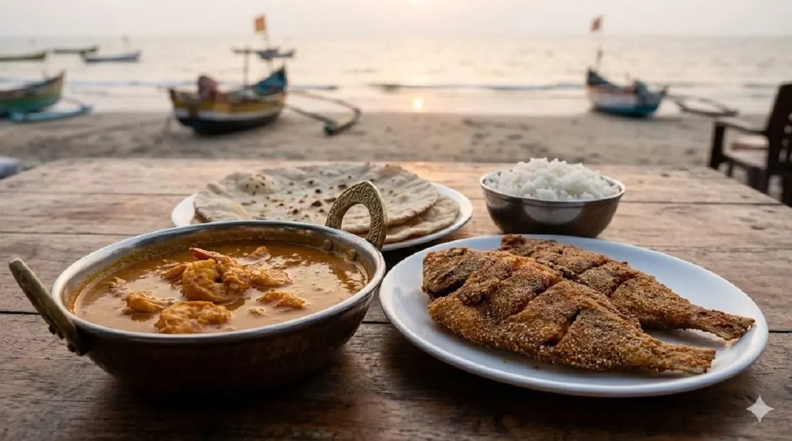
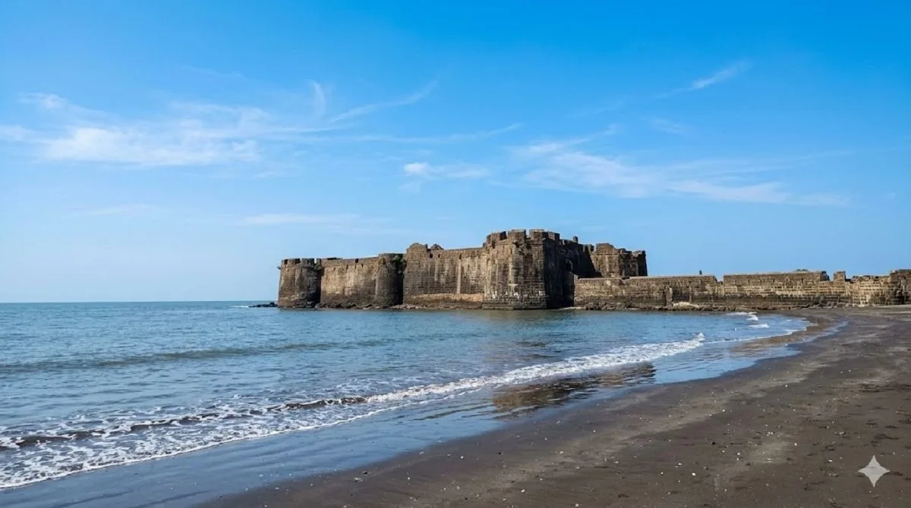

Day 1: Nagaon Beach
Start with a strong beach anchor that also connects naturally to resort and water-sport pages.
Itinerary pages help users imagine the trip flow, which makes them more likely to continue into transport and hotel pages.

Start with a strong beach anchor that also connects naturally to resort and water-sport pages.

Food stops make itineraries feel more complete and useful for actual travelers.

Mix sightseeing with a final beach stop to make the plan balanced and practical.
Dolphin House Beach Resort fits neatly into a 2-day Alibaug itinerary focused on Nagaon Beach and weekend convenience.